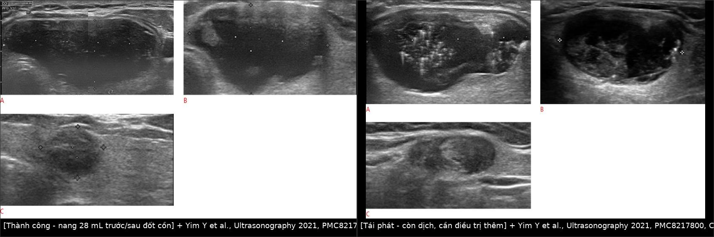
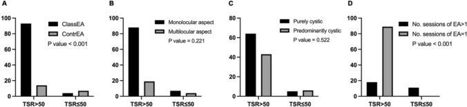
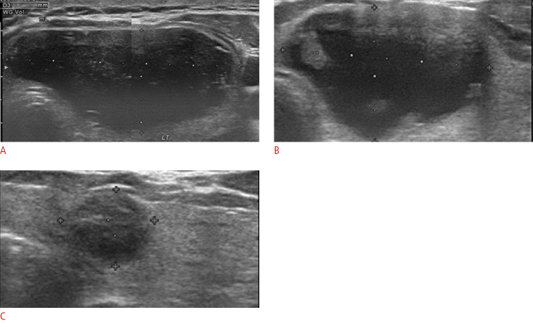
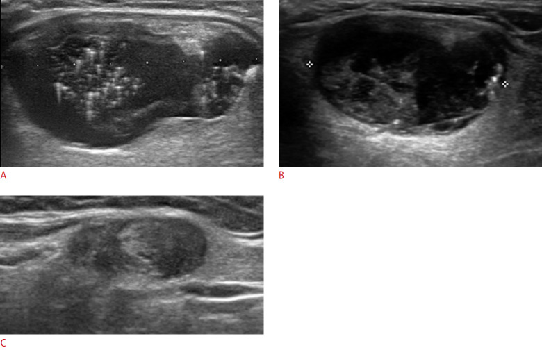
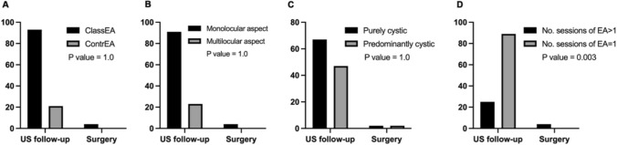

1622 — Đốt cồn nang giáp lành tính (PEI/EA) / Percutaneous ethanol ablation of benign thyroid cysts
Tags: pattern:nang vung:tuyen-giap protocol:dot-con-giap incidentaloma:nang-giap
Mức chắc chắn (certainty): tổng hợp y văn (literature synthesis) — biên từ toàn văn các bài mở: phân tích gộp 19 nghiên cứu/1.514 người (PMC7937837, CC BY-NC 4.0), nghiên cứu 154 nang về tiêu chuẩn tái phát (PMC8217800, CC BY-NC 4.0), đoàn hệ 118 nang theo dõi 1 năm (PMC13369035, CC BY 4.0), loạt 65 ca PEI (PMC13229250, CC BY-NC-ND 4.0), so sánh RFA–EA 1 tháng (PMC9884003, CC BY-NC 4.0) và so sánh EA–MWA theo kích thước (PMC9641769, CC BY-NC 4.0). Số liệu lấy từ toàn văn, không lấy từ abstract gián tiếp.
1. Tổng quan — vì sao hút dịch thất bại và vì sao cồn lại hiệu quả
- Bệnh học: đa số "nang giáp" là nhân giáp thoái triển — một nhân keo (colloid nodule) bị hoại tử/xuất huyết trung tâm, tạo khoang dịch có thành xơ, không có biểu mô bài tiết thật (pseudocyst). Vì thành nang không phải biểu mô tuyến, dịch tái tích tụ từ mạch máu và mô xơ quanh nang sau khi hút.
- TẠI SAO hút đơn thuần tái phát 60–90%: hút chỉ lấy dịch, không phá thành mạch nuôi và không làm dính thành nang → khoang còn nguyên, dịch quay lại (PMC13229250). Đây là lý do không được coi "hút ra là điều trị".
- TẠI SAO cồn (ethanol) hiệu quả: ethanol 95–100% gây đông vón protein và biến tính tế bào nội mạc trong vài phút, gây xơ hóa thành nang, huyết khối các mạch nhỏ nuôi thành → khoang xẹp và dính lại. Ethanol không cần "đốt nóng" và không phụ thuộc năng lượng như RFA/MWA; hiệu quả đến từ nồng độ cồn tiếp xúc đủ lâu với toàn bộ mặt trong nang — vì vậy phải hút kiệt, bơm đủ thể tích, xoay/ép cho cồn tiếp xúc đều.
- TẠI SAO nang keo đặc lại khó: dịch quá quánh không hút được → cồn không tiếp xúc được toàn bộ mặt trong nang. Giải pháp thực hành: bơm cồn trước rồi mới hút (kỹ thuật "contrariwise" — cồn làm loãng/liquefy chất keo, được gọi vui là hiệu ứng "Saint Januarius"), hoặc dùng kim to/hút lặp kèm rửa nước muối (PMC13369035).
- Ngưỡng định lượng nằm lòng:
- Định nghĩa loại nang: nang thuần (purely cystic) = thành phần dịch > 90%; nang ưu thế dịch (predominantly cystic) = > 50% dịch (PMC13369035). Nang < 50% dịch là nhân đặc có thành phần nang — không phải đối tượng của bài này.
- Hiệu quả gộp: tỷ lệ giảm thể tích (volume reduction ratio — VRR) 83,9% (KTC 95%: 79,4–88,5%) trên 19 nghiên cứu, 1.514 người (PMC7937837); nang thuần 80–100%, nang ưu thế dịch 65–85,4% (PMC13369035).
- Thành công: VRR > 50% kèm cải thiện triệu chứng/cosmetic (PMC8217800, PMC13369035).
- Thể tích cồn: y văn không thống nhất — một trung tâm dùng ~50% thể tích dịch hút ra (trung bình 8,3 mL, 1–20 mL, giữ ~2 phút — PMC8217800); trung tâm khác dùng 2,2 mL (trung vị) cho nang 16,2 mL (PMC13369035). Bảng gộp các nghiên cứu cũ cho khoảng 25–70% thể tích nang, nồng độ 95–100%, thời gian lưu 2 phút đến không hút ra (PMC7937837). Chưa có ngưỡng chuẩn — không được suy từ một nghiên cứu ra quy luật.
2. Mẫu hình + chẩn đoán phân biệt theo hình thái (gamut)
- Mẫu hình đích: khối giảm âm đồng nhất, bờ đều, không vách/tăng sinh, không có thành phần đặc ngấm thuốc, dịch trong hoặc vàng, trên siêu âm không có vi vôi hóa, không có bờ tua gai, không có hướng không song song.
- Gamut theo hình thái:
- Nang thuần (> 90% dịch) — đáp ứng tốt nhất với cồn; có thể chỉ một lần.
- Nang ưu thế dịch (> 50% dịch) — đáp ứng khá hơn, tái phát 26–33% (dẫn trong PMC9884003); thường cần nhiều lần hoặc phối hợp RFA.
- Nang keo đặc/quánh — hút khó; bơm cồn trước hoặc kim to + rửa; kết quả kém hơn.
- Nang xuất huyết — dịch nâu sẫm, có cặn; có thể đốt cồn sau khi loại trừ ung thư; tái phát cao hơn.
- Nang nhiều vách (multilocular) — cồn khó tiếp xúc toàn bộ; yếu tố tiên lượng âm (đa thùy: OR thấp hơn cho thành công; chỉ nang một thùy là yếu tố tiên lượng VAS = 0 và cosmetic = 1, OR = 5,72 — PMC13369035).
- Không phải nang giáp: nang giáp lưỡi (thyroglossal duct cyst) — đường giữa, trên sụn giáp, di động khi nuốt/lè lưỡi; lymphangioma — đa khoang; nang cạnh giáp (parathyroid cyst) — thường góc dưới tuyến, dịch trong, PTH cao.
- Nang "giả" do ung thư: ung thư thể nang (follicular) hoặc nhú (papillary) có thành phần nang — thành dày, nốt đặc thành bên trong, có mạch trong phần đặc; tuyệt đối không đốt cồn trước khi có tế bào học.
- Mnemonic 4 câu hỏi trước khi đốt: (1) Có tế bào học lành tính chưa? (2) Dịch chiếm > 50% thể tích? (3) Có phần đặc ngấm mạch không? (4) Có triệu chứng chèn ép/thẩm mỹ đáng điều trị không?
3. Bảng so sánh phân biệt (ma trận đối chiếu)
| Thực thể (entity) | Hình ảnh điển hình | Chốt vào (rule-in) | Chốt loại (rule-out) | Gợi ý xác nhận |
|---|---|---|---|---|
| Nang thuần — đích của đốt cồn | Giảm âm đồng nhất, bờ đều, > 90% dịch, không vách, không phần đặc | Đồng nhất + không phần đặc + FNA lành tính | Có nốt đặc/thành dày/mạch trong vách → không phải nang thuần | Siêu âm + FNA; VRR > 50% sau 1–6 tháng |
| Nang ưu thế dịch | Dịch > 50%, phần đặc còn lại không có mạch | Dịch > 50% + phần đặc không mạch | Phần đặc có mạch trong → nghi tân sinh, cần FNA/lõi | Siêu âm Doppler; theo dõi 1–6–12 tháng |
| Nang keo đặc/quánh | Hồi âm hỗn hợp "kính mờ", hút ra ít, kim hay tắc | Hút không ra dịch lỏng dù kim đúng vị trí | Dịch lỏng hút dễ → nang thường | Thử bơm cồn trước (contrariwise) hoặc kim 16G |
| Nang xuất huyết | Dịch nâu sẫm, cặn lơ lửng, có thể vách mảnh | Dịch nâu sẫm + không có mạch trong phần đặc | Phần đặc ngấm thuốc/bờ tua gai → nghi ác | Tế bào học dịch; theo dõi sát |
| Ung thư có thành phần nang | Thành dày không đều, nốt đặc thành trong, vi vôi hóa, mạch trong phần đặc | Phần đặc có mạch + vi vôi hóa/bờ tua gai | Nang thuần không vách, không đặc → loại | ACR TI-RADS (bài 230) + FNA; không đốt cồn |
| Nang giáp lưỡi / lymphangioma | Đường giữa trên sụn giáp, hoặc đa khoang cổ | Vị trí đường giữa + di động khi lè lưỡi; đa khoang | Nằm trong tuyến giáp, một khoang → nang giáp | Siêu âm + MRI khi cần; không đốt cồn như nang giáp |

Trái: nang ưu thế dịch 28 mL — (A) trước, (B) sau đốt cồn, (C) lần theo dõi cuối: thể tích giảm còn rất nhỏ, không còn dịch. Phải: nang tái phát — (A) trước, (B) sau lần đốt đầu còn dịch, (C) phần đặc còn lại có mạch → đánh giá lại và cân nhắc RFA. Nguồn: Yim Y et al., Ultrasonography 2021, Fig. 2–3, CC BY-NC 4.0. Ảnh ghép letterbox.Ba tiêu chuẩn "tái phát" và giá trị thực dụng
- ≥ 1 mL dịch còn lại ở siêu âm 1 tháng: 81,3% bệnh nhân không cần điều trị thêm (PMC8217800).
- VRR < 50% ở 1 tháng: 70,0% không cần điều trị thêm.
- Còn phần đặc có mạch trong nang đã đốt: 77,8% không cần điều trị thêm.
- Kết luận thực hành: không quyết định điều trị thêm chỉ dựa vào một tiêu chuẩn hình ảnh — phải kết hợp triệu chứng + hình ảnh + xu hướng theo thời gian. Đây là điểm khác biệt lớn so với "u đặc sau RFA".
4. Protocol can thiệp + ngưỡng xử trí
Chỉ định (theo KSThR, dẫn trong PMC8217800): nang thuần hoặc nang ưu thế dịch có triệu chứng chèn ép hoặc vấn đề thẩm mỹ, tế bào học lành tính (Bethesda II) — hoặc FNA không chẩn đoán được nhưng là nang thuần không có phần đặc; hormone giáp bình thường; không có dấu hiệu nghi ác trên siêu âm (vi vôi hóa, hướng không song song, bờ tua gai/vi thùy).
Kỹ thuật (bậc thang):
- Đánh giá trước: siêu âm đo 3 đường kính, thể tích V = πabc/6; Doppler phân độ mạch; FNA (có thể lặp 1–5 lần nếu toàn dịch) — trong loạt 154 nang, 29,9% FNA không chẩn đoán được vì nang thuần (PMC8217800).
- Gây tê tại chỗ (lidocaine 1–2%); kim 16–18G vào phần dịch dưới hướng dẫn siêu âm.
- Hút kiệt + rửa: hút tối đa; rửa nước muối sinh lý để làm sạch chất keo/dịch cặn ("internal debridement").
- Bơm cồn 99%: thể tích ~50% thể tích dịch hút (trung bình 8,3 mL; 1–20 mL), bơm chậm; giữ ~2 phút rồi hút ra cùng kim (PMC8217800). Một số trung tâm không hút ra; bằng chứng không cho thấy khác biệt rõ — chưa có chuẩn.
- Nang quánh/keo đặc: bơm cồn trước khi hút (contrariwise) để làm loãng, sau đó hút và bơm lần hai nếu cần (PMC13369035).
- Theo dõi tại chỗ 30 phút (đau, chóng mặt, đỏ bừng, tim đập nhanh do hấp thu cồn) rồi cho về (PMC8217800).
- Lặp lại: nếu còn dịch/triệu chứng, lặp cùng kỹ thuật — trong đoàn hệ 118 nang, 75,4% chỉ cần 1 lần, 16,1% cần 2 lần, 7,6% cần 3 lần, 0,9% cần 4 lần (PMC13369035).
Theo dõi: siêu âm 1 – 6 – 12 tháng, sau đó mỗi 6–12 tháng (PMC8217800); đo VRR, đánh giá triệu chứng (VAS 0–10) và cosmetic (1–4).
Ngưỡng chuyển hướng:
- Nang ưu thế dịch tái phát nhiều lần / còn phần đặc có mạch → RFA (KSThR khuyến cáo RFA khi triệu chứng không hết hoặc tái phát sau EA — dẫn trong PMC8217800); RFA giảm thể tích nhanh hơn ở 1 tháng trong một nghiên cứu nhỏ (PMC9884003), nhưng phân tích gộp không thấy khác biệt về VRR/thành công giữa EA và RFA (PMC7937837).
- Nghi ác / chèn ép nặng / bướu giáp đa nhân có triệu chứng → phẫu thuật.
- Sau EA vẫn còn nang lớn, nhiều lần, không dung nạp → hội chẩn ngoại.
flowchart TD
A["Nhân giáp có thành phần dịch"] --> B{"Dịch chiếm trên 50 phần trăm thể tích?"}
B -->|Không| C["Nhân đặc: đánh giá ACR TI-RADS, FNA theo ngưỡng, không đốt cồn"]
B -->|Có| D{"Có triệu chứng chèn ép hoặc vấn đề thẩm mỹ?"}
D -->|Không| E["Theo dõi siêu âm 6-12 tháng"]
D -->|Có| F{"FNA lành tính hoặc nang thuần không phần đặc?"}
F -->|Không| G["FNA/lõi lại; nghi ác thì chuyển phẫu thuật"]
F -->|Có| H["Hút kiệt + rửa nước muối"]
H --> I{"Dịch quánh, hút khó?"}
I -->|Có| J["Bơm cồn trước rồi hút (contrariwise)"]
I -->|Không| K["Bơm cồn 99 phần trăm, khoảng 50 phần trăm thể tích dịch, giữ 2 phút"]
J --> K
K --> L["Theo dõi 1-6-12 tháng: VRR trên 50 phần trăm?"]
L -->|Có| M["Thành công: theo dõi tiếp"]
L -->|Không| N{"Còn triệu chứng + phần đặc có mạch?"}
N -->|Không| E
N -->|Có| O["Lặp EA hoặc chuyển RFA; bướu lớn chuyển phẫu thuật"]

Thử Fisher giữa tỷ lệ thành công (VRR > 50%) với: (A) kiểu kỹ thuật (classical vs contrariwise), (B) hình thái, (C) thành phần nang, (D) số lần đốt. Nang một thùy và kỹ thuật classical (hút được dịch trước) là yếu tố thuận; thể tích nang ban đầu, thành phần, số lần và tổng lượng cồn không phải yếu tố tiên lượng độc lập. Nguồn: Scappaticcio L et al., Radiol Med 2026, Fig. 2, CC BY 4.0.Kết quả tham chiếu (để tư vấn bệnh nhân): VRR trung vị 81,4% ở 6 tháng và 88,9% ở 12 tháng; thành công 88,1% (6 tháng) và 90,7% (12 tháng); biến chứng nhẹ 22,9%, biến chứng nặng 0,85% (1 ca khàn tiếng thoáng qua); 3,4% phải mổ (PMC13369035). Loạt 65 ca khác: 92,3% đáp ứng ở 3 tháng, 100% ở 6 tháng, VRR 86,5% (PMC13229250). Phân tích gộp: VRR 83,9% (PMC7937837).
5. Biến thể bình thường và cạm bẫy
- Biến thể bình thường: nang nhỏ < 1–2 cm, không triệu chứng — không can thiệp; nang thoái triển sau xuất huyết có thể tự xẹp; nang cạnh giáp (parathyroid) trông giống hệt nang giáp nhưng không đốt cồn vì có thể là nang tuyến cận giáp.
- Cạm bẫy 1 — chỉ hút dịch: tái phát 60–90% (PMC13229250). "Hút ra xẹp" không phải điều trị.
- Cạm bẫy 2 — bỏ FNA vì "rõ ràng là nang": ung thư thể nhú/thể nang có thể biểu hiện như nang; trong loạt 154 nang, 29,9% FNA không chẩn đoán được (PMC8217800) — với nang thuần không phần đặc có thể chấp nhận, nhưng có phần đặc thì bắt buộc lấy tế bào.
- Cạm bẫy 3 — đốt cồn nang keo đặc mà không xử lý độ quánh: cồn không tiếp xúc hết thành nang → thất bại; dùng contrariwise hoặc kim 16G + rửa (PMC13369035).
- Cạm bẫy 4 — gọi "tái phát" quá sớm: còn ≥ 1 mL dịch ở 1 tháng nhưng 81,3% không cần điều trị thêm; VRR < 50% nhưng 70,0% không cần thêm; phần đặc có mạch nhưng 77,8% không cần thêm (PMC8217800). Quyết định dựa trên triệu chứng + xu hướng, không chỉ một lần đo.
- Cạm bẫy 5 — khàn tiếng: biến chứng nặng hiếm — 0,53% (6/1.136) trong phân tích gộp, thoáng qua, chưa có ca liệt dây thanh vĩnh viễn do EA được báo cáo (PMC7937837); so sánh: RFA 1,0% (15/1.459). Khàn tiếng sau thủ thuật vẫn phải soi thanh quản nếu kéo dài.
- Cạm bẫy 6 — triệu chứng toàn thân do hấp thu cồn: chóng mặt, đỏ bừng, tim đập nhanh, buồn nôn — gặp 2/118 ca; theo dõi 30 phút sau thủ thuật, không cho về ngay (PMC13369035).
- Cạm bẫy 7 — dùng một con số thể tích cồn cho mọi nang: 2,2 mL (trung vị) và 8,3 mL (trung bình) đến từ hai trung tâm khác nhau; chưa có ngưỡng chuẩn, chỉ nên theo protocol của cơ sở và không vượt quá nhu cầu tiếp xúc thành nang.
6. Tự lượng giá — Blind Quiz
Ca 1 — Nang giáp 28 mL, nuốt vướng. Nhìn 3 ảnh siêu âm, mô tả trước khi kết luận.

- Gợi ý: nữ 64 tuổi, FNA lành tính, nang ưu thế dịch.
- Câu hỏi: (A) mô tả gì? (B), (C) chứng minh điều gì? Định nghĩa "thành công" trong bài này?
Bấm để hiện đáp án
- Dấu hiệu: (A) nang lớn giảm âm đồng nhất, không vách, không phần đặc; (B) sau đốt cồn còn dịch ít, vách xẹp; (C) lần cuối gần như không còn dịch, mô tuyến bình thường.
- Chẩn đoán: nang giáp lành tính đã đốt cồn 99%; thành công = VRR > 50% kèm hết triệu chứng.
- Nguồn ảnh: Yim Y et al., Ultrasonography 2021, Fig. 2, CC BY-NC 4.0 (nguyên bản, không chỉnh sửa).
Ca 2 — Đốt cồn 1 lần, 6 tuần sau vẫn vướng. Nhìn ảnh, quyết định bước tiếp.

- Gợi ý: cùng bệnh nhân bị nang ưu thế dịch; lần đốt đầu không hết triệu chứng.
- Câu hỏi: (B) có gì khác nang thuần? Có nên đốt cồn lần 2 ngay không? Tiêu chí nào dùng để quyết định?
Bấm để hiện đáp án
- Dấu hiệu: (B) còn dịch và xuất hiện phần đặc bên trong có mạch; (C) phần đặc rõ hơn, bờ không đều.
- Chẩn đoán: nang tái phát có thành phần đặc có mạch — nhóm VRR thấp, tái phát 26–33%; theo KSThR cân nhắc RFA thay vì lặp cồn nhiều lần (dẫn trong PMC8217800, PMC9884003).
- Quyết định: kết hợp triệu chứng + kích thước + mạch trong phần đặc; nếu phần đặc tăng hoặc có nét nghi ác → FNA/lõi lại trước khi đốt.
- Nguồn ảnh: Yim Y et al., Ultrasonography 2021, Fig. 3, CC BY-NC 4.0 (nguyên bản).
Ca 3 — Đọc biểu đồ kết cục: bệnh nhân nào nên được tư vấn kỹ trước khi đốt?

- Gợi ý: biểu đồ so sánh kết cục cuối (theo dõi bằng siêu âm vs phải mổ) theo kiểu kỹ thuật, hình thái, thành phần nang và số lần đốt.
- Câu hỏi: Nhóm nào có nguy cơ phải mổ cao hơn? Điều này có làm thay đổi cách bạn chọn bệnh nhân không?
Bấm để hiện đáp án
- Dấu hiệu: tỷ lệ phải mổ cao hơn ở nhóm nang nhiều thùy và ở kỹ thuật không hút được dịch trước (contrariwise); nhóm một thùy và classical có kết cục tốt hơn.
- Chẩn đoán/thực hành: hình thái một thùy là yếu tố tiên lượng thuận (OR = 5,72 cho VAS = 0 và cosmetic = 1); thể tích ban đầu, thành phần nang, số lần đốt và tổng lượng cồn không phải yếu tố tiên lượng độc lập (PMC13369035) → tư vấn kỳ vọng thực tế cho nang nhiều thùy, cân nhắc RFA/phẫu thuật sớm hơn.
- Nguồn ảnh: Scappaticcio L et al., Radiol Med 2026, Fig. 3, CC BY 4.0.
Bài liên quan chéo
- 230 – Tuyến giáp ACR TI-RADS & hạch cổ (phân tầng nhân giáp trước can thiệp)
- 1629 – Đốt nhiệt nhân giáp lành tính ĐẶC (RFA/MWA): IAR, hydrodissection & ngưỡng đốt lại (bài song song: nhân đặc)
- 929 – Gây xơ hóa nang qua da (nguyên lý cồn/chất xơ hóa, khác biệt nang giáp)
- 901 – Tổng quan Điện quang Can thiệp (an toàn thủ thuật, đáp ứng)
- 932 – An toàn bức xạ trong can thiệp (thủ thuật dưới siêu âm: không liều)
- 750 – Hạch cổ & NI-RADS (phân biệt nang/hạch vùng cổ)
- 689 – Suy giáp tiêu thụ do u mạch máu ở trẻ (bệnh giáp khác có can thiệp)
Ảnh
- Ảnh tải từ bài full-text mở (Europe PMC); nguồn + giấy phép từng file ở
images/CREDITS.md. Ảnh CC BY-NC (PMC8217800) dùng nguyên bản, không ghép riêng lẻ; composite ghép hai ảnh CC BY-NC (cho phép tạo tác phẩm phái sinh, không ND).
Không dùng để chẩn đoán độc lập khi chưa có người hướng dẫn.